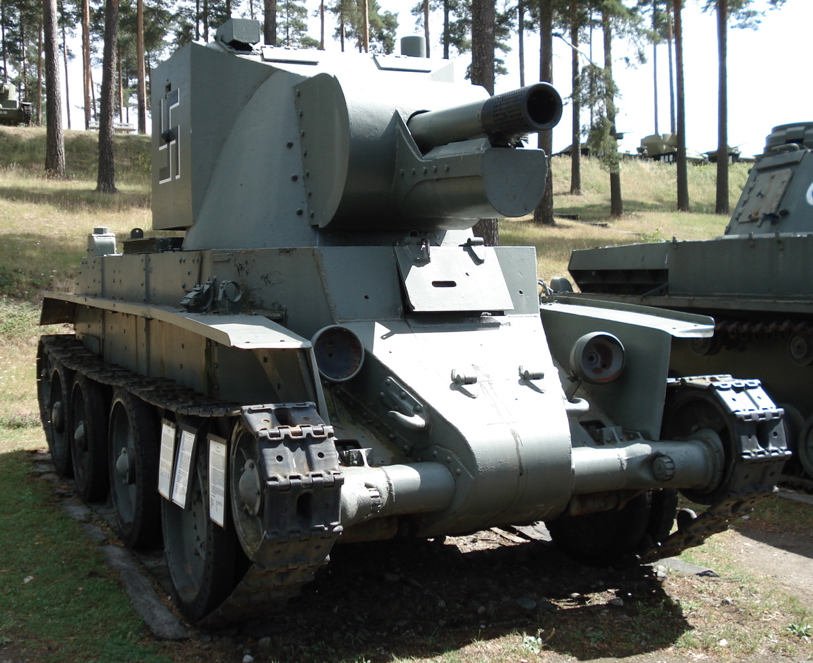

ninguem pediu por isso
Primeiro tanque: BT-42 vulgo melhor tanque
o BT-42 foi um tanque finlandes construido durante a guerra da continuação em 1942, olhando por cima ele parece um tanque normal, mas na realidade ele é quase um frankestein, o tanque foi feito pelos finlandeses mas o casco era o de um BT-7, um tanque russo, a torre foi feita pelos próprios finlandeses, o canhão era um 114mm 4.5-inch howitzer feita no reino unido, o motor era um Mikulin M-17T V-12 que foi feito pelos alemães, e ele usava uma suspensão christie feita pelos americanos
se fosse só isso o tanque não teria nada de ruim, mas a torre era muito pesada pro tanque, colocando muito peso no coitado e sobrecarregando a suspensão, a armadura da torre também era horrivel, se um tanque acertasse ela, era praticamente garantido que ninguem dentro do bt-42 ia sobreviver, ele também era horrivel na guerra anti-tanque, sofrendo muito pra eliminar alvos grandes, os finlandeses tentaram contornar esse problema trocando a munição, de uma HE pra uma HEAT feita pelos alemães, mas ela não era adequada para por causa da diferença entre o 4.5-inch howitzer com os canhões alemães originais.
durante a ofensiva sovietica em 1944, um BT-42 acertou um IS-2 18 vezes, falhando em imobilizar o tanque sovietico em todas as vezes porque as os fusíveis do BT-42 se recusaram a funcionar corretamente, a parte mais impressionante disso é o IS-2 ter demorado tanto pra eliminar o BT-42 por que pra recarregar o tanque 18 vezes teria demorado aproximadamente 3 minutos
no total foram feitos 18 modelos do BT-42 e o ultimo modelo vivo esta no Parola Tank Museum em Parola, na Finlandia.
eu só coloquei esse tanque porque gosto muito dele.
